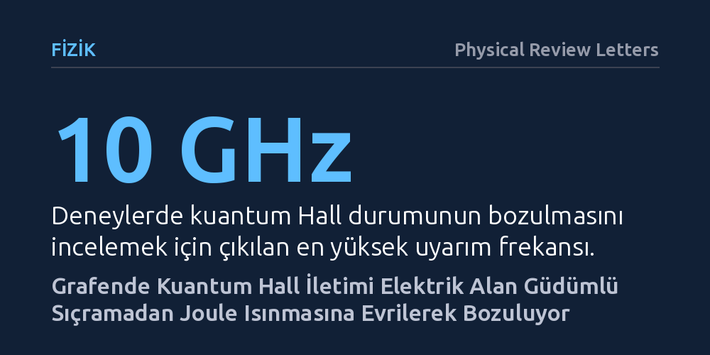

FIZIK · Physical Review Letters · 2026-10-13
Araştırmacılar, yüksek hareketliliğe sahip grafen aygıtlarda kuantum Hall etkisinin geniş frekans aralığında nasıl çöktüğünü inceledi. Ölçümler, bu bozulmanın elektrik alanı destekli sıçramalı iletimden akımın yarattığı Joule ısınmasına geçişle yönetildiğini ortaya koydu.
Kuantum Hall durumunun çöküşünün tek bir nedenden değil, uygulanan alanın gücüne göre elektrik alandan ısı kaynaklı dağılmaya evrilen iki aşamalı bir süreçten kaynaklandığını gösteriyor.

Grafen, karbon atomlarının tek katmanlı bal peteği örgüsünde dizilmesiyle oluşan ve elektronların olağanüstü hızlarda hareket edebildiği iki boyutlu bir malzemedir. Güçlü bir manyetik alan altına yerleştirildiğinde elektronlar ayrık enerji seviyelerine kilitlenir ve kuantum Hall etkisi adı verilen olay ortaya çıkar. Bu durumda malzeme içindeki akım kenarlardan dirençsiz ve kayıpsız bir biçimde akar. Ancak yüksek akımlar veya değişken elektrik alanları uygulandığında bu hassas kuantum dengesi aniden çöker.
Kuantum Hall durumunun bozulması, kuantum metrolojisinden yüksek hızlı elektronik devre tasarımına kadar birçok pratik uygulamanın sınırını belirler. Bilim insanları uzun süredir bu bozulmanın grafenin kendine has elektronik yapısında hangi mekanizmayla tetiklendiğini tartışıyordu. Bozulmanın doğrudan elektrik alanının elektronları itmesiyle mi yoksa malzemenin içinde biriken ısının kuantum durumunu eritmesiyle mi gerçekleştiği net olarak bilinmiyordu.
Araştırmacılar bu soruyu yanıtlamak için dairesel geometriye sahip ve Corbino diski olarak adlandırılan özel grafen aygıtlar geliştirdi. Bu geometrinin seçilmesinin kritik bir nedeni vardır: Standart çubuk biçimli numunelerin aksine Corbino aygıtlarında kenar akımları kapalı devre oluşturur. Böylece araştırmacılar sadece grafenin gövdesinden geçen elektron iletimine odaklanabildi ve kenar etkilerinin ölçümleri maskelemesini engelledi.
Deney düzeneğinde doğru akımdan başlayarak 10 gigahertz gibi çok yüksek mikrodalga frekanslarına kadar uzanan geniş bantlı bir uyarım spektrumu kullanıldı. Araştırmacılar hem ortam sıcaklığını hem de uygulanan elektrik alanını kontrollü biçimde değiştirerek malzemenin elektriksel iletkenliğini adım adım haritalandırdı. Bu sırada değişken menzilli sıçrama modeli üzerinden sıcaklık ölçümleri gerçekleştirilerek elektronların kazandığı gerçek enerji takip edildi.
Ölçüm sonuçları, grafenin gövdesindeki iletkenliğin her aşamada değişken menzilli sıçrama fiziğiyle tutarlı olduğunu gösterdi. Düşük alanlarda elektronlar uygulanan elektrik alanının desteğiyle enerji engellerini aşarak bir kuantum noktasından diğerine sıçrıyordu. Bu rejimde akım ile voltaj arasındaki ilişki doğrusal değildi; yani sistem klasik Ohmik direnç yasalarına uymayan, tamamen elektrik alanının güdümünde bir davranış sergiliyordu.
Ancak uyarım şiddeti ve akım belirli bir eşiğin üzerine çıktığında mekanizmada net bir geçiş gözlendi. Sisteme pompalanan yüksek enerji, grafen içindeki elektronların yerel olarak aşırı ısınmasına yol açtı. Joule ısınması olarak bilinen bu sıcaklık artışı baskın hale geldiğinde, iletkenlik davranışı aniden standart Ohmik rejime dönüştü. Böylece kuantum Hall etkisinin çöküşünün tekdüze bir olay olmadığı, elektrik alan kaynaklı sıçramadan ısı kaynaklı Ohmik iletime uzanan dinamik bir geçişle belirlendiği kanıtlandı.
Elde edilen bulgular, iki boyutlu malzemelerde kuantum durumlarının yüksek frekanslı çalışma koşullarındaki dayanıklılığına ilişkin kritik bir harita sunuyor. Grafen gibi malzemelerde kuantum bilgisayarlar veya ultra hassas direnç standartları tasarlanırken, sistemin sadece dış elektrik alanlarına değil, kendi ürettiği mikroskobik ısıya karşı da nasıl davrandığı artık hesaba katılmak zorunda.
Çalışma, aşırı zorlayıcı elektromanyetik alanlar altında çalışan nano-elektronik aygıtlarda ısı dağılımının kuantum korumasını yıkan temel eşik olduğunu gösteriyor. Araştırmacıların kurduğu model sayesinde, gelecekte grafen tabanlı mikrodalga aygıtların hangi güç sınırlarında kuantum özelliklerini kaybetmeden güvenle çalışabileceği önceden hesaplanabilecek.